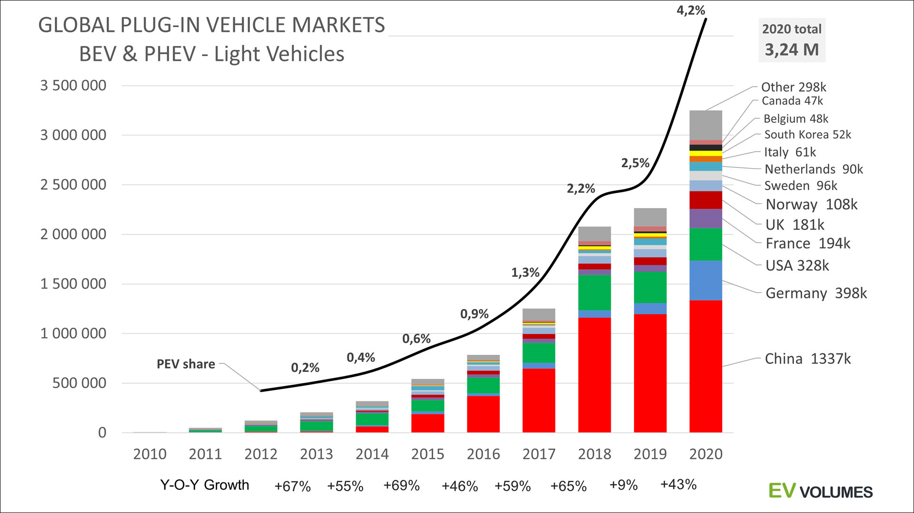

Тема:
"Концепция развития городской сети станций быстрого заряда электромобилей"
Здесь мы рассмотрим:
- Создание сети станций быстрого заряда для электромобилей
- Существующую инфраструктуру станций быстрой зарядки
- Технические характеристики и особенности воздействия концепции.
- Сделаем вывод о перспективах
Введение
На мировой рынок стремительно выходят электромобили. Их успех открывает большие возможности для декарбонизации транспортного сектора, улучшение экологической обстановки в мире. В 2018 году был зафиксирован рекордный показатель объем продаж электрокаров в мире — 2,1 млн. По оценкам экспертов к 2030 г. объем продаж электромобилей может достичь 27 млн. единиц, что в свою очередь увеличит спрос на электро-заправочные станции.

Рис. 1 Рост Продаж Электромобилей с 2010 по 2020 г